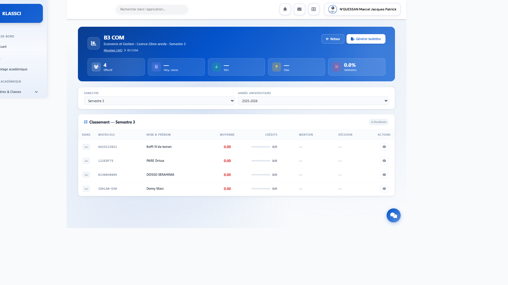
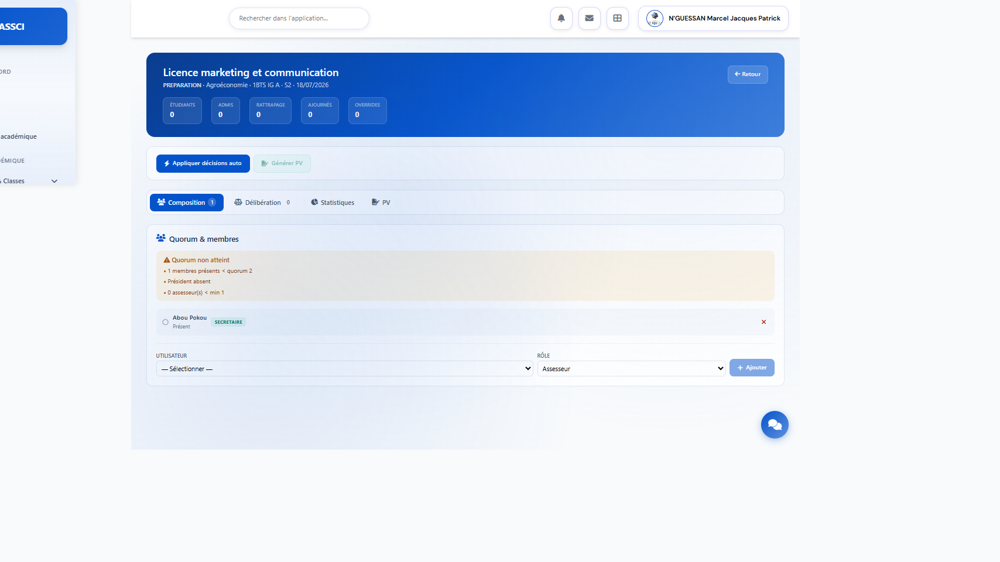
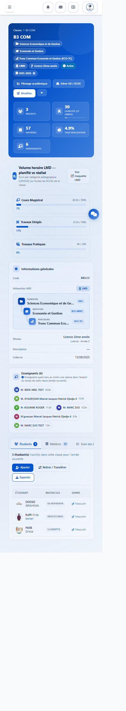
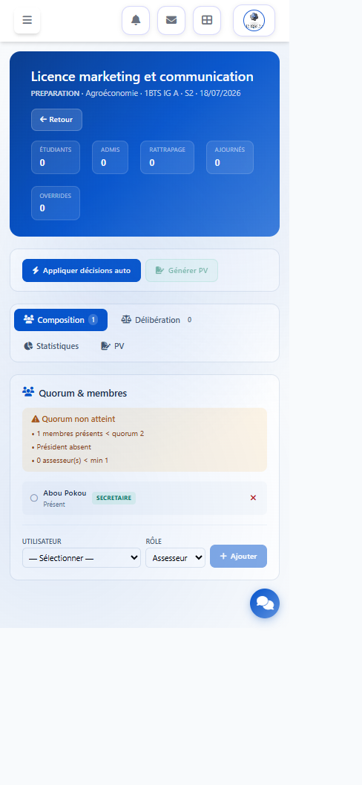

Audit et preuves · Phase 0
LMD 360
de l’existant à l’autorité académique.
Cartographie authentifiée, risques de cohérence, friction utilisateur et premier parcours vertical production-grade.
Cartographie authentifiée, risques de cohérence, friction utilisateur et premier parcours vertical production-grade.
KLASSCI possède déjà les briques LMD essentielles. Le chantier ne doit pas les recréer, mais les réconcilier autour d’une autorité académique unique, traçable et explicable.
| Domaine | État | Qualité | Décision |
|---|---|---|---|
| Domaine, Mention, Parcours, UE, ECUE | Présent | Fragile, relations concurrentes | Réconcilier |
| Résultats et bulletins LMD | Partiel | Sources de décision divergentes | Autorité unique |
| AcademicPilotage | Présent | Socle récent exploitable | Étendre |
| JuryRoom et PV | Partiel | Workflow et signature incomplets | Sécuriser |
| Credit Wallet | Absent | Aucun ledger de provenance | Créer après snapshots |
| Chatbot | Cassé | Outils sensibles hors scope | Confiner |
206 étudiants actifs, 11 classes via API, quatre domaines LMD, cinq mentions et neuf parcours.
28 GradeSheets attendues, 258 alertes ouvertes, 49 blocantes et 65 snapshots en données insuffisantes.
Jury, délibération legacy et bulletin pouvaient présenter trois conclusions différentes.
L’écriture bulk contournait l’observer Eloquent et donc le verrou AcademicPilotage.
La génération du premier bulletin dépendait d’une métrique issue d’un bulletin déjà généré.
Un utilisateur autorisé pouvait signer pour un autre membre du jury.
Un même identifiant pouvait régénérer un PDF avec des données différentes.
Des outils notes, paiements et étudiants ne limitaient pas suffisamment les données au scope de l’utilisateur.


Le design KLASSCI est cohérent et les workspaces spécialisés existent déjà.
`NAQ`, tiret, zéro et non calculé doivent avoir des conséquences visibles distinctes.


Objectif contractuel : p95 inférieur à 2 secondes pour les pages normales.
Mesurer les requêtes, N+1, agrégats et chargements de relations de JuryRoom et examen.
Ne pas masquer la lenteur avec des compteurs animés. Réduire la charge serveur et afficher un état de chargement honnête.
| Tâche | Friction | Décision |
|---|---|---|
| Trouver ce qui bloque le jury | Prérequis dispersés | Readiness canonique |
| Saisir des notes sur mobile | Reprise et verrou non prouvés | Mutation unique et brouillon fiable |
| Examiner un cas exceptionnel | Règle et décision divergentes | Review screen motivée |
| Reprendre une séance | Machine d’états implicite | Transitions journalisées |
| Comprendre une non-validation | Codes sans explication | Cause et règle visibles |
| Auditer une correction | Historique mutable | Journal append-only |
L’émission immuable des PDF, les rectificatifs, le registre public, le Credit Wallet, le confinement complet du chatbot et l’optimisation p95 restent des lots distincts.
| Étape | Résultat attendu |
|---|---|
| 1. Runtime et tests | PHP 8.3, dépendances, suite ciblée et matrice BTS/LMD |
| 2. Confinement IA | Permissions, rôle, scope et kill switch avant outil sensible |
| 3. Documents officiels | Versions immuables, hash, révocation et rectificatif |
| 4. Credit Wallet | Ledger alimenté uniquement depuis des preuves canoniques |
| 5. Performance | JuryRoom et examen sous budget mesuré |